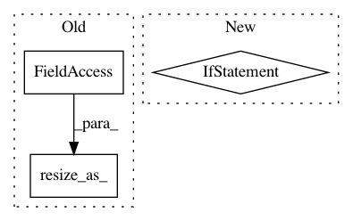

24edeb20221803c592d9bc2c4f428fb9697358b7,gpytorch/inference/posterior_models/variational_gp_posterior.py,_VariationalGPPosterior,forward,#_VariationalGPPosterior#,65
Before Change
alpha = Variable(self.alpha)
else:
alpha = gpytorch.variational_posterior_alpha(induc_induc_covar, self.variational_mean)
self.alpha.resize_as_(alpha.data).copy_(alpha.data)
test_mean = gpytorch.variational_posterior_mean(test_induc_covar, alpha)
test_covar = gpytorch.variational_posterior_covar(test_induc_covar, induc_test_covar,
self.chol_variational_covar, test_test_covar,
After Change
test_test_covar = full_covar[n:, n:]
// Calculate posterior components
if not hasattr(self, "alpha"):
self.alpha = gpytorch.variational_posterior_alpha(induc_induc_covar, self.variational_mean)
test_mean = gpytorch.variational_posterior_mean(test_induc_covar, self.alpha)
test_covar = gpytorch.variational_posterior_covar(test_induc_covar, induc_test_covar,
self.chol_variational_covar, test_test_covar,
induc_induc_covar)
In pattern: SUPERPATTERN
Frequency: 3
Non-data size: 3
Instances
Project Name: cornellius-gp/gpytorch
Commit Name: 24edeb20221803c592d9bc2c4f428fb9697358b7
Time: 2017-08-25
Author: gpleiss@gmail.com
File Name: gpytorch/inference/posterior_models/variational_gp_posterior.py
Class Name: _VariationalGPPosterior
Method Name: forward
Project Name: cornellius-gp/gpytorch
Commit Name: 24edeb20221803c592d9bc2c4f428fb9697358b7
Time: 2017-08-25
Author: gpleiss@gmail.com
File Name: gpytorch/inference/posterior_models/exact_gp_posterior.py
Class Name: _ExactGPPosterior
Method Name: forward
Project Name: zhanghang1989/PyTorch-Encoding
Commit Name: 2d21747abdbf1968a9d565a4090d5d6297ade71a
Time: 2018-06-04
Author: zhang.hang@rutgers.edu
File Name: encoding/functions/syncbn.py
Class Name: _sum_square
Method Name: backward